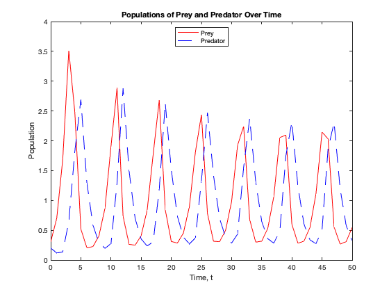
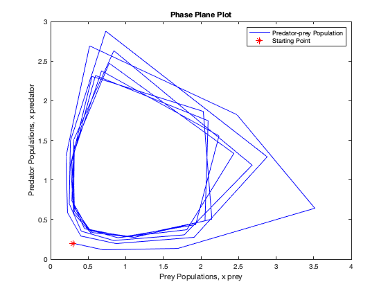
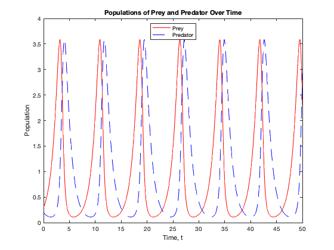
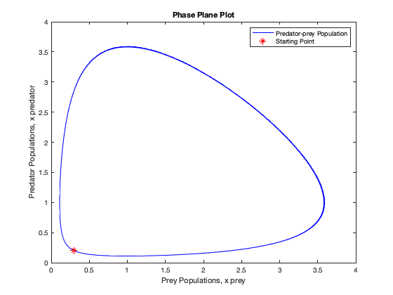

Contents
% Name : Kai Chuen Tan % Title : Homework 4 % Course : CSE 276C: Mathematics for Robotics % Professor : Dr. Henrik I. Christensen % Date : 13th November 2021 clear all; clc; close all; fprintf('Name : Kai Chuen Tan\n') fprintf('Title : Homework 4\n') fprintf('Course : CSE 276C: Mathematics for Robotics\n') fprintf('Professor : Dr. Henrik I. Christensen\n') fprintf('Date : 13th November 2021\n\n') fprintf('--------------------------------------------------------\n\n')
Name : Kai Chuen Tan Title : Homework 4 Course : CSE 276C: Mathematics for Robotics Professor : Dr. Henrik I. Christensen Date : 13th November 2021 --------------------------------------------------------
--------------------------------------------------------
Problem 2 - Solving Predator-prey Model with Runge-Kutta
fprintf('Problem 2 - Solving Predator-prey Model with Runge-Kutta\n') fprintf('--------------------------------------------------------------------\n\n') % Initialize the coefficients b = 1; p = 1; r = 1; d = 1; % Time interval t0 = 0; % Initial Time t_final = 50; % Final Time % Step size h = 1; % Number of intervals n = (t_final - t0) / h; % Time Array (1 x n+1) t = zeros(1, n+1); t(1) = t0; % Prey array, x1 (1 x n+1) x_prey = zeros(1, n+1); x_prey(1) = 0.3; % Predator array, x2 (1 x n+1) x_predator = zeros(1, n+1); x_predator(1) = 0.2; % Define Lotka-Volterra Predator-prey Model. % x1 - Prey Population % x2 - Predator Population dx1_dt = @(x1, x2) (b - p * x2) * x1; dx2_dt = @(x1, x2) (r * x1 - d) * x2; % Runge-Kutta Fourth Order [t, x_prey, x_predator] = ODE_Runge_Kutta_4(dx1_dt, dx2_dt, t, x_prey, x_predator, h, n); % Plot Populations Over Time and Phase Plane plot_Populations_Over_Time(t,x_prey, x_predator) plot_Phase_Plane(x_prey,x_predator) % Print Comment on the Results fprintf("Figure 2 - Phase Plane Plot illustrates that it somewhat converges to an orbit with a step size of 1,\n") fprintf("but due to the large global error, O(h^5), it does not converge back to the initial point. Hence, the step\n") fprintf("size will adjusted to a smaller step size, which is 0.1.\n\n")
Problem 2 - Solving Predator-prey Model with Runge-Kutta -------------------------------------------------------------------- Figure 2 - Phase Plane Plot illustrates that it somewhat converges to an orbit with a step size of 1, but due to the large global error, O(h^5), it does not converge back to the initial point. Hence, the step size will adjusted to a smaller step size, which is 0.1. 
Smaller Step Size, h = 0.1
Step size
h = 0.1; % Number of intervals n = (t_final - t0) / h; % Time Array (1 x n+1) t = zeros(1, n+1); t(1) = t0; % Prey array, x1 (1 x n+1) x_prey = zeros(1, n+1); x_prey(1) = 0.3; % Predator array, x2 (1 x n+1) x_predator = zeros(1, n+1); x_predator(1) = 0.2; % Runge-Kutta Fourth Order [t, x_prey, x_predator] = ODE_Runge_Kutta_4(dx1_dt, dx2_dt, t, x_prey, x_predator, h, n); % Plot Populations Over Time and Phase Plane plot_Populations_Over_Time(t,x_prey, x_predator) plot_Phase_Plane(x_prey,x_predator) % Print Comment on the Results fprintf("Figure 4 - Phase Plane Plot illustrates that it converges to an orbit with a step size of 0.1,\n") fprintf("Figure 3 - Populations of Prey and Predator Over Time presents that as the prey population increases,\n") fprintf("the predator population started to rise exponentially due to the increase in foods. However, as the \n") fprintf("predator increases exponentially, the prey population starts to drop drastically. Because of the drastic\n") fprintf("drop in the prey population, the predator population starts to drop as well due to insufficient food.\n") fprintf("The drop in prey and predator populations continues until the prey and predator populations reach\n") fprintf("the initial prey population value and the initial predator population value as shown in the Figure 4 -\n") fprintf("Phase Plane Plot. Then, the cycle will repeat.\n")
Figure 4 - Phase Plane Plot illustrates that it converges to an orbit with a step size of 0.1, Figure 3 - Populations of Prey and Predator Over Time presents that as the prey population increases, the predator population started to rise exponentially due to the increase in foods. However, as the predator increases exponentially, the prey population starts to drop drastically. Because of the drastic drop in the prey population, the predator population starts to drop as well due to insufficient food. The drop in prey and predator populations continues until the prey and predator populations reach the initial prey population value and the initial predator population value as shown in the Figure 4 - Phase Plane Plot. Then, the cycle will repeat. 